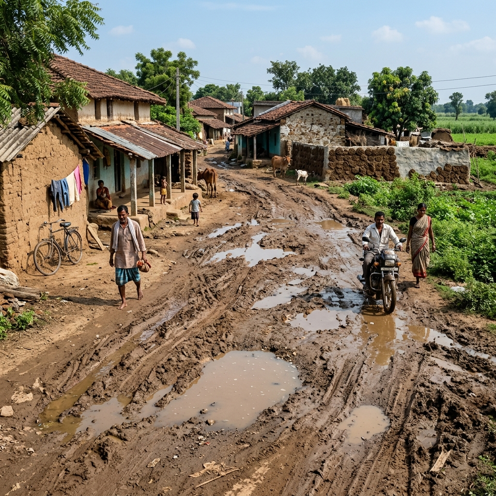

See The Impact
Slide to see the transformation of our villages through the Rural Governance platform.
 After
After

BeforeSubmit requests, track complaints, and access services entirely online without visiting the Panchayat office.
To empower rural communities with a reliable digital platform that ensures every issue is heard, tracked, and resolved efficiently.
To simplify complaint reporting, improve communication, and enable data-driven decision making for better local governance.
We provide a smart web-based solution where citizens can report issues, track progress, and receive real-time updates securely.
File a complaint with photos, location, and description.
Issue is assigned to relevant department officer.
Officer investigates and takes action on the ground.
Complaint resolved and you receive instant updates.
Slide to see the transformation of our villages through the Rural Governance platform.
After

Before